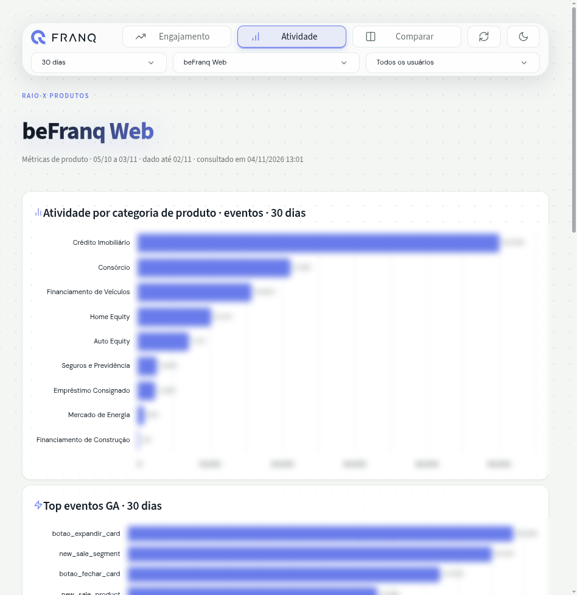
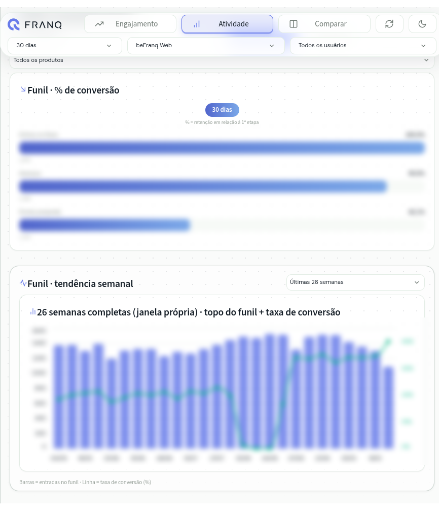
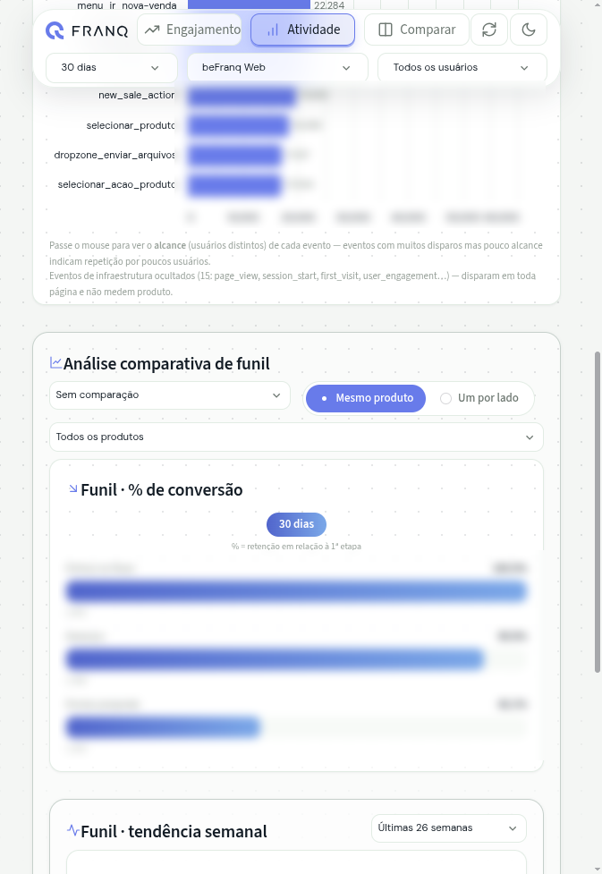
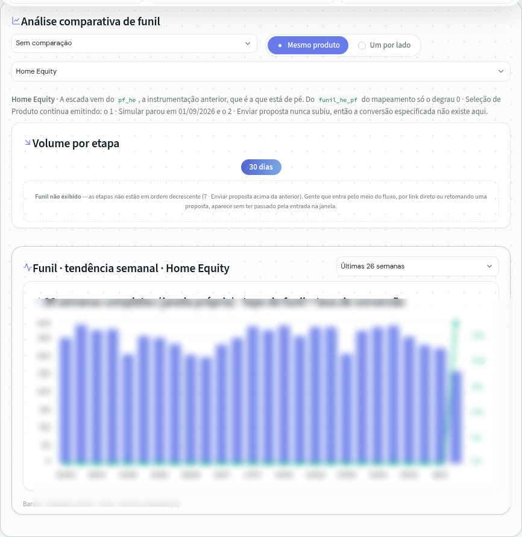
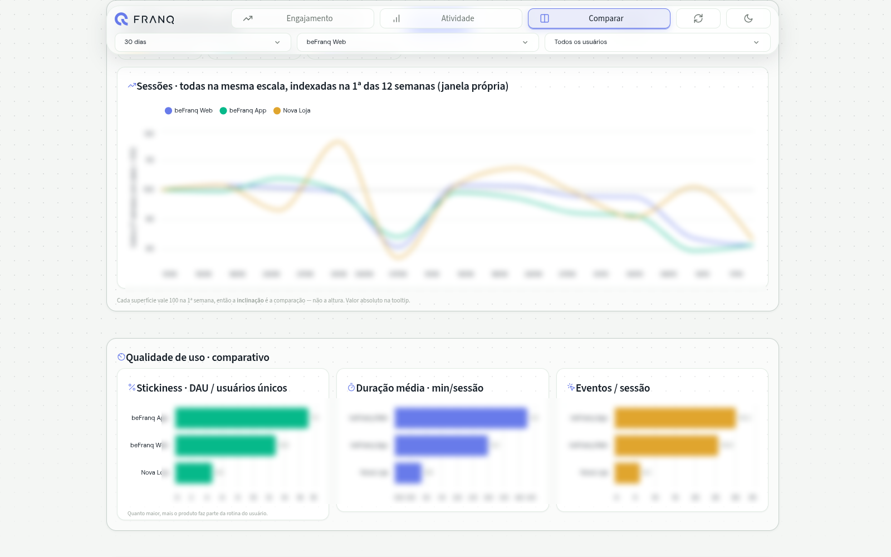
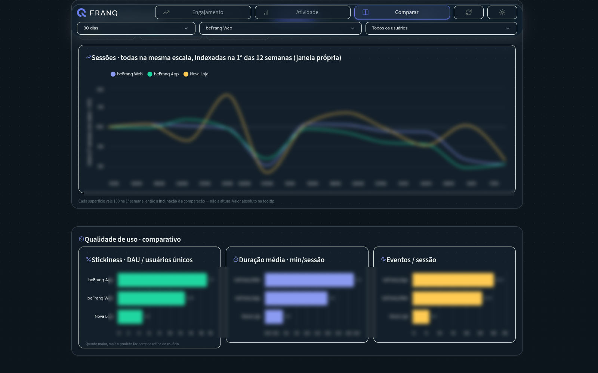

Product analytics
Executive product dashboard — the company’s first Streamlit
Three sales surfaces, live reads from the warehouse, 600+ data-quality tests, presented to the board.
The problem
Product and sales questions were answered one SQL query at a time. Two people asking the same question reached two different numbers, and the data was a day old.
What I built
The proof of concept that introduced Streamlit to the company’s stack: three sales surfaces, blocks reading BigQuery directly, more than 600 automated data-quality tests, and a visual standard co-created with the Design team. When a funnel does not hold, the screen says so instead of drawing a chart.
Result
Data latency down from 24 hours to 30 minutes. Presented to the board and used by the team every week, in light and dark themes and on mobile.
Screens
Numbers are blurred on purpose: the data belongs to Franq.






Stack
- Streamlit
- Python
- BigQuery
- dbt
- SQL
- pytest
- Plotly